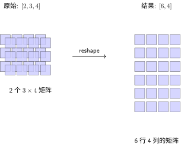
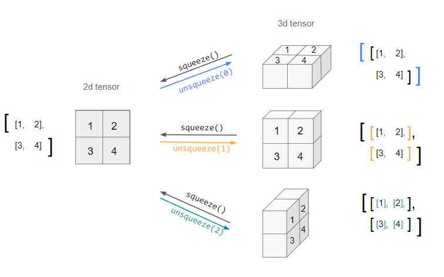
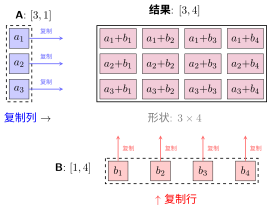

张量操作：数据在网络中的流动#
在 计算图 中，数据沿着计算图的边流动——从输入节点流向输出节点。但在实际代码中，这些数据需要变形以适应不同层的输入要求：
卷积层输出
[batch, 32, 28, 28]，但全连接层需要[batch, 25088]——这需要reshape单张图片是
[3, 224, 224]，但批次需要[batch, 3, 224, 224]——这需要unsqueeze两个不同形状的张量如何相加？——这需要广播机制
本章将学习 PyTorch 中改变张量"形状"的各种操作，理解它们如何对应神经网络中的数据流转。
形状操作：改变张量的"视图"#
Reshape vs View：重新排列元素#
Reshape 和 View 就像重新排列书架上的书——书还是那些书，但摆放方式变了。
import torch
# 原始张量：2 张 3×4 的特征图（如卷积层输出）
x = torch.randn(2, 3, 4)
print(f"原始形状: {x.shape}") # torch.Size([2, 3, 4])
# reshape/view：改变形状，但不改变数据
# 想象把书架从 2×3×4 重新排列成 6×4
y = x.reshape(6, 4) # 或 x.view(6, 4)
print(f"reshape 后: {y.shape}") # torch.Size([6, 4])
# 元素数量必须一致：2×3×4 = 6×4 = 24
print(f"元素数量: {x.numel()} == {y.numel()}") # True
reshape vs view 的区别
view：要求张量在内存中是连续的，速度更快但不灵活
reshape：可以处理非连续张量（必要时复制数据），更灵活但可能稍慢
建议：能用 view 就用 view，不确定时用 reshape reshape 的可视化：

reshape 操作示意图
在神经网络中的应用：
# CNN → 全连接的经典转换
conv_output = torch.randn(64, 32, 28, 28) # batch=64, 32通道, 28×28特征图
# 展平为全连接层的输入：64 个样本，每个 32×28×28 = 25088 维
fc_input = conv_output.reshape(64, -1) # -1 表示自动计算
print(f"展平后: {fc_input.shape}") # torch.Size([64, 25088])
# 这就是 {doc}`../neural-network-basics/le-net` 中 C5 层到 F6 层的操作！
squeeze 与 unsqueeze：增减维度#
直觉：
unsqueeze：在指定位置插入一个维度为 1 的轴（增加一个"壳"）
squeeze：移除所有维度为 1 的轴（剥掉"壳"）
squeeze/unsqueeze 的可视化：
{kind=link}

squeeze 和 unsqueeze 操作示意图：squeeze 移除维度为 1 的轴，unsqueeze 在指定位置添加维度为 1 的轴。图中展示了 2D 张量如何通过不同的 unsqueeze 操作变成不同形状的 3D 张量。#
# 单张图片：[3, 224, 224] —— 没有 batch 维度
image = torch.randn(3, 224, 224)
print(f"原始: {image.shape}") # torch.Size([3, 224, 224])
# unsqueeze(0)：在第 0 维添加 batch 维度
batch_image = image.unsqueeze(0)
print(f"加 batch 维度: {batch_image.shape}") # torch.Size([1, 3, 224, 224])
# 也可以在其他位置添加
channel_first = image.unsqueeze(1) # 在通道维度前添加
print(f"在中间添加: {channel_first.shape}") # torch.Size([3, 1, 224, 224])
squeeze 的用法：
# 模型输出的 logits：[batch, 1] —— 多余的维度
logits = torch.randn(64, 1)
# squeeze()：移除所有维度为 1 的轴
predictions = logits.squeeze() # 或 logits.squeeze(1)
print(f"squeeze 后: {predictions.shape}") # torch.Size([64])
# 注意：squeeze 只移除维度为 1 的轴，不会删除其他维度
x = torch.randn(2, 1, 3, 1, 4)
print(f"squeeze 后: {x.squeeze().shape}") # torch.Size([2, 3, 4])
什么时候用 squeeze/unsqueeze？
unsqueeze 常见场景：
单张图片 → 批次：需要在前面加 batch 维度
调整广播：让两个张量的维度对齐以便运算
squeeze 常见场景：
移除模型输出中多余的维度
计算损失前调整形状
transpose 与 permute：重排维度顺序#
直觉：想象一个魔方，你可以旋转它的面——元素位置改变，但数据不变。
# 原始：[batch, channels, height, width] —— PyTorch 默认格式
x = torch.randn(2, 3, 4, 5)
print(f"原始: {x.shape}") # torch.Size([2, 3, 4, 5])
# transpose：交换两个维度
y = x.transpose(1, 2) # 交换 channels 和 height
print(f"transpose: {y.shape}") # torch.Size([2, 4, 3, 5])
# permute：任意重排所有维度
z = x.permute(0, 2, 3, 1) # [batch, height, width, channels]
print(f"permute: {z.shape}") # torch.Size([2, 4, 5, 3])
实际应用：图像格式转换
# OpenCV 读取的图片是 [H, W, C]（通道在最后）
opencv_image = torch.randn(224, 224, 3)
# 转换为 PyTorch 格式 [C, H, W]（通道在最前）
pytorch_image = opencv_image.permute(2, 0, 1)
print(f"PyTorch 格式: {pytorch_image.shape}") # torch.Size([3, 224, 224])
flatten：完全展平#
# 卷积层输出：[batch, 32, 7, 7]
conv_out = torch.randn(64, 32, 7, 7)
# flatten：从指定维度开始展平
fc_input = conv_out.flatten(start_dim=1) # 保持 batch，展平后面所有维度
print(f"flatten: {fc_input.shape}") # torch.Size([64, 1568])
# 等价于
fc_input = conv_out.reshape(64, -1)
广播机制：让不同形状的张量一起运算#
什么是广播？#
直觉：广播就像班级合影——小个子站在凳子上，大个子弯下腰，最终大家的脸在同一水平线上。
# 场景 1：张量 + 标量
x = torch.tensor([[1, 2], [3, 4]])
y = x + 10 # 标量 10 被"广播"为 [[10, 10], [10, 10]]
print(y)
# tensor([[11, 12],
# [13, 14]])
广播规则（从右到左比较维度）：
维度相等：可以广播
其中一个为 1：可以广播（复制该维度）
都不为 1 且不相等：不能广播
广播可视化：

广播机制示意图
广播示例#
# 场景 2：不同形状但兼容
# A: [3, 1] —— 3 行 1 列
# B: [1, 4] —— 1 行 4 列
A = torch.tensor([[1], [2], [3]]) # shape: [3, 1]
B = torch.tensor([[10, 20, 30, 40]]) # shape: [1, 4]
# A 被广播为 [3, 4]：复制列
# B 被广播为 [3, 4]：复制行
C = A + B
print(f"C 的形状: {C.shape}") # torch.Size([3, 4])
print(C)
# tensor([[11, 21, 31, 41],
# [12, 22, 32, 42],
# [13, 23, 33, 43]])
神经网络中的广播应用#
# 批归一化中的均值减法
batch_data = torch.randn(64, 3, 224, 224) # batch=64, 3通道
# 计算每个通道的均值：[3] —— 每个通道一个均值
channel_mean = batch_data.mean(dim=[0, 2, 3]) # 在 batch、height、width 上求平均
print(f"通道均值形状: {channel_mean.shape}") # torch.Size([3])
# 广播减法：channel_mean [3] → 自动广播为 [64, 3, 224, 224]
normalized = batch_data - channel_mean.view(1, 3, 1, 1)
print(f"归一化后: {normalized.shape}") # torch.Size([64, 3, 224, 224])
索引与切片：精准定位数据#
基本索引#
x = torch.randn(4, 5, 6) # 类比：4 张图片，每张 5×6
# 取第一张图片
first = x[0] # shape: [5, 6]
# 取所有图片的第 0 行
first_row = x[:, 0] # shape: [4, 6]
# 取子张量
patch = x[1:3, 2:4, :] # shape: [2, 2, 6]
高级索引#
# 用索引张量选取
x = torch.randn(5, 3)
indices = torch.tensor([0, 2, 4]) # 选第 0、2、4 行
selected = x[indices] # shape: [3, 3]
# 布尔掩码
mask = x > 0
positive = x[mask] # 一维张量，包含所有正数
gather 与 scatter：复杂数据重排#
# gather：按索引收集数据
src = torch.tensor([[1, 2], [3, 4], [5, 6]]) # [3, 2]
index = torch.tensor([[0, 0], [1, 0], [0, 1]]) # [3, 2]
# 按 index 从 src 中收集
dst = torch.gather(src, 1, index)
print(dst)
# tensor([[1, 1], # 第0行取 src[0,0], src[0,0]
# [4, 3], # 第1行取 src[1,1], src[1,0]
# [5, 6]]) # 第2行取 src[2,0], src[2,1]
内存与性能#
视图 vs 复制#
x = torch.randn(2, 3, 4)
# view/reshape：共享内存（视图）
y = x.view(6, 4)
y[0, 0] = 999
print(x[0, 0, 0]) # 999 —— x 也被修改了！
# clone()：创建副本
z = x.clone().view(6, 4)
z[0, 0] = 888
print(x[0, 0, 0]) # 999 —— x 不受影响
什么时候需要 clone？
需要 clone 的场景：
你想修改张量但保留原始数据
原地操作会导致梯度计算错误时
需要断开源张量的计算图
contiguous：内存连续性#
x = torch.randn(2, 3, 4)
# transpose 后张量可能不连续
y = x.transpose(0, 1) # shape: [3, 2, 4]
print(y.is_contiguous()) # False
# view 要求连续内存，会报错
# z = y.view(6, 4) # RuntimeError!
# 方法 1：先 contiguous
z = y.contiguous().view(6, 4)
# 方法 2：直接用 reshape（自动处理）
z = y.reshape(6, 4)
操作速查表#
操作 |
作用 |
神经网络场景 |
内存影响 |
|---|---|---|---|
|
改变形状 |
CNN → FC 转换 |
视图（共享） |
|
改变形状（更灵活） |
通用形状变换 |
可能复制 |
|
移除维度为 1 的轴 |
移除多余维度 |
视图 |
|
添加维度为 1 的轴 |
添加 batch 维度 |
视图 |
|
交换两个维度 |
图像格式转换 |
视图 |
|
任意重排维度 |
NHWC → NCHW |
视图 |
|
展平指定维度后所有轴 |
特征图 → 向量 |
视图 |
|
广播（不复制数据） |
匹配形状 |
视图 |
|
复制数据 |
重复张量 |
复制 |
下一步#
掌握了张量操作后，我们可以开始构建神经网络了。在 神经网络模块：搭建计算图 中：
核心认知：神经网络的每一层本质上都是张量 → 张量的映射——理解形状变换，就理解了数据在网络中的流动。
贡献者与修订历史
查看详细修订记录
-
b20ef3e2026-04-28 - Heyan Zhu: docs: update pytorch practice section with detailed explanations and code examples -
dcecce42026-01-26 - Heyan Zhu: docs: enrich math fundamentals documentation with code captions and TikZ visualizations -
cec393d2025-12-11 - Heyan Zhu: docs: partially complete migration and restructure course materials -
0c291d72025-12-10 - Heyan Zhu: docs: restructure course materials and add new content